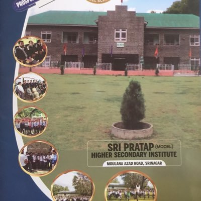

Sri Pratap Higher
Secondary is an all-boys school located atM.A. Road, Srinagar.It is the first and oldest school in Srinagar, locally known as S.P school.
It is one of the most prestigious institutions in the state owing to its rich history and notable alumni. It was established in 1874 by the King of Jammu
and Kashmir himself, Maharaja Ranbir Singh and is named after his successor Sri Pratap Singh. The school has risen from ranks starting as a middIe school then a
high school after that becoming a higher secondary school and being elevated

to the status of Model School by the state government. It is a selective school that offers admission on the basis of merit . The school has produced a line of
distinguished alumni.
In the New Normal, a question remains: how long will this masked appearance continue? Look at the realities!
Kashmir experienced complete alienation from the rest of the world for few months in 2019. This man-made calamity was somehow overtaken by the natural calamity
of the Pandemic.COVID kept apart the dear ones from each other while in many cases separated each other forever without even giving them a chance to bid adieu.
OUR ANTHEM:
A new form of administration in Jammu & Kashmir sans political parties and elections continues.
A new mode of schooling, business and economic activities have been adopted and has become part of normal life.
Competitions, Public examinations and the Service Selection process have almost come to a standstill leaving the future of a generation so bleak and uncertain.
OUR LOCATION:
Qualifying without the practical know-how being assessed, ie; relying merely on the theoretical knowledge will have an adverse impact
on society in the days to come. Millions of jobs are lost and the lives of millions across the world have turned out utterly miserable.
Unfortunately the number of orphans - children or adults - is bound to be a great concern of the caring Governments and the people of goodwill.
OUR WIKIPEDIA PAGE:
The reason behind all these? Perhaps the uncaring attitude towards God's beautiful world and the pride of money for which God planned to teach the humanity a lesson --> unforgettable. Yet if predictions come true of a third wave of COVID in another mutant form, we will also be forced to adopt new behaviours. So the new normal must open our eyes and take us into an Era of Realization.